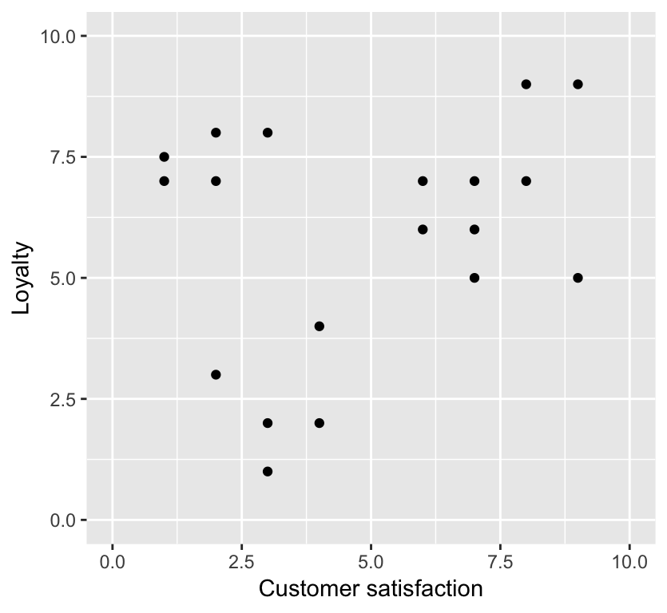
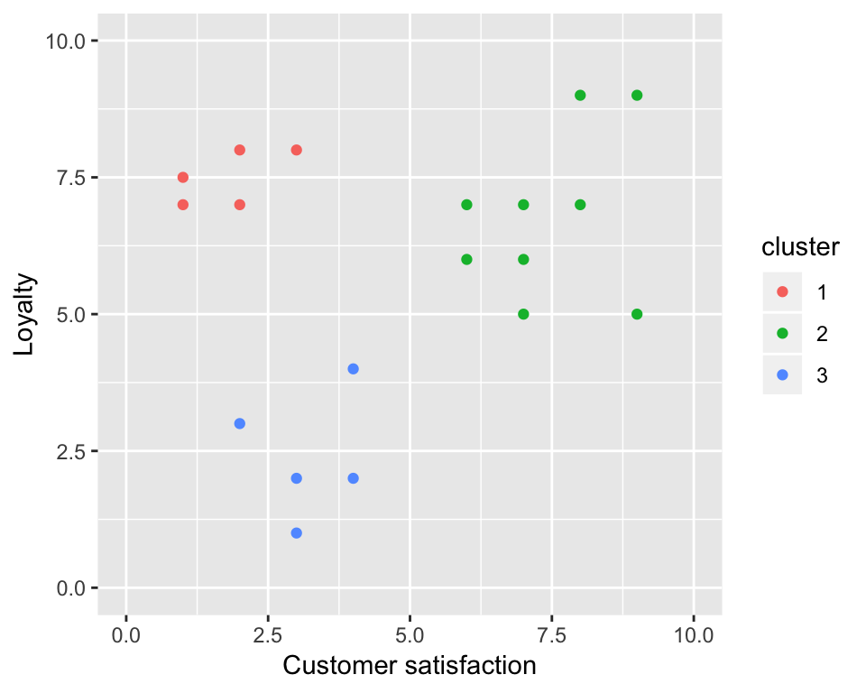
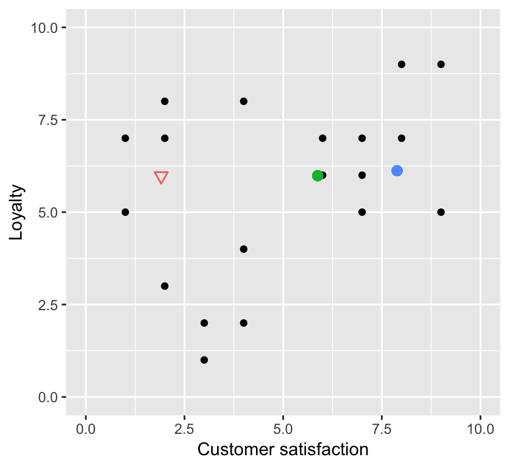
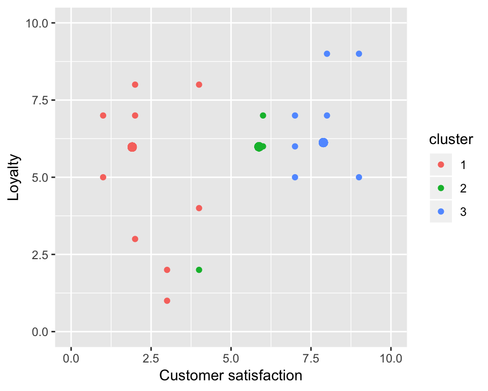
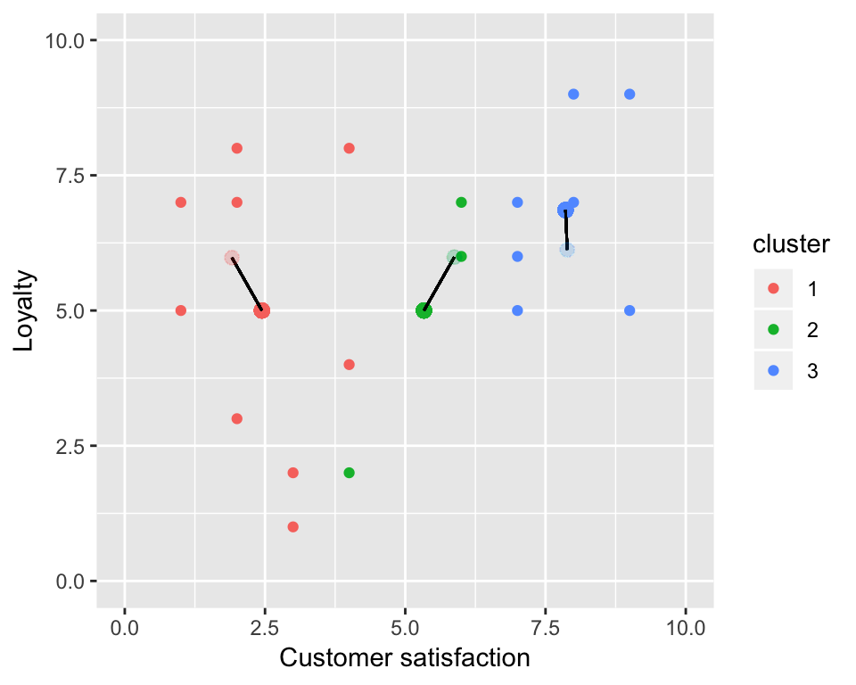
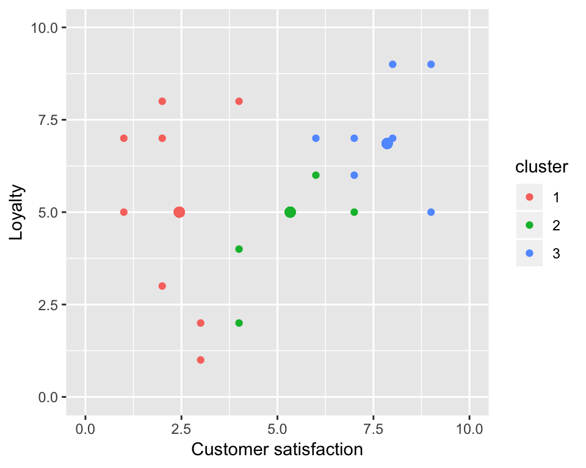

Chapter 11 Clustering
11.1 Overview
Introduction to clustering using K-means. Will discuss the K-means algorithm, how we choose K (the number of clusters) and other practical considerations (such as scaling).
11.2 Learning objectives
By the end of the chapter, students will be able to:
- Describe a case where clustering would be an appropriate tool, and what insight it would bring from the data.
- Explain the kmeans clustering algorithm.
- Interpret the output of a kmeans analysis.
- Perform kmeans clustering in R using
kmeans. - Visualize the output of kmeans clustering in R using pair-wise scatter plots.
- Identify when it is necessary to scale variables before clustering and do this using R.
- Use the elbow method to choose the number of clusters for k-means.
- Describe advantages, limitations and assumptions of the kmeans clustering algorithm.
11.3 Clustering
While at first glance, clustering may seem very similar to classification, these two methods have some very important distinction. Most notably, classification is a supervised method (we use past information to predict the future values/labels for our target/response variable), whereas clustering is considered an unsupervised method (there is no target/response variable and we are looking to find sub-groups/clusters of observations based on how similar they are). So, where classification might be used to label future emails as spam or not spam, clustering might be instead be used to group emails into categories based on their similarity, however we would not have labels for these categories in the case of clustering. Another example problem we might try to solve with clustering is grouping Amazon customers into groups based upon their similar purchasing behaviours. Again here, we do not have, nor need, labels for customer groups.
Another way to think about it is, that classification is really about predicting something that you might have a scientific question about and/or hypothesis for, whereas, clustering is very often a hypothesis generating process (you identify things that are similar to each other that might be unexpected, and from those observations, you might generate a question and hypothesis that you might follow-up with classification).
Another major difference between clustering and classification is in how success is determined. With classification we are able to use a test data set to assess prediction performance, in clustering we must use variance metrics to determine how well our defined clusters fit the data. The two metrics used to determine success are between- and within- variation. Ideally we want clusters where the between-variance is large (so that the clusters are well separated) and the within- variation is small (so that the clusters are composed of close/tight-knit observations).
11.3.1 A toy example
What if we had some customer data, and we wanted to learn more about the types of customers we had so that we could come up with better products and/or promotions to increase our business in a data-driven way. For example, let’s consider this data below, where we have assessed customer loyalty and customer satisfaction:

data modified from: http://www.segmentationstudyguide.com/using-cluster-analysis-for-market-segmentation/
From this data we might ask whether there are sub-groups within our customers? For example do we have customers with high loyalty and high satisfaction? What about low satisfaction and high loyalty? One way to answer such a question is to apply K-means clustering analysis. When we do such an analysis on this data set we identify 3 customer subgroups within our data set:

What are the labels for these groups? We don’t really have any, only cluster numbers are output from the clustering algorithm. In a simple case like this, where we can easily visualize the clusters on a scatter plot, we can give labels to these groups after clustering using the positions of the groups on the plot:
- low loyalty and low satisfaction (green cluster),
- high loyalty and low satisfaction (pink cluster),
- and high loyalty and high satisfaction (blue cluster).
Once we have such data we can use it to inform our future business decisions, and/or ask questions like, why did we not observe customers who had high satisfaction but low loyalty?
11.4 K-means clustering algorithm
How does the K-means clustering algorithm work? Let’s use the toy example shown above to illustrate it. First, we start by choosing \(K\), the number of clusters. For this example we will choose 3. How do we choose \(K\)? It’s an important question that we will answer later in this chapter. After choosing the number of clusters, we randomly assign a cluster centre (called a centroid) for each of the K clusters. We illustrate that below:

Next, we assign the points to the cluster with the closest centroid based on straight line distance:

Next, we re-adjust the position of the centroids to be the centre of the clusters:

Then we update cluster assignments of the points to the nearest cluster:

And again we update the centroid position to be the centre of the new clusters:

And then next, we update the points again based on which centroid they are closest too. We do this over and over and over again until we get to a point where the centroids no longer change very much (or don’t change at all) between iterations of the algorithm.
Watch the video linked to below for an explanation of the K-means clustering algorithm: - https://www.coursera.org/lecture/machine-learning-data-analysis/what-is-a-k-means-cluster-analysis-p94tY
note - when the add pops up to register for this course, you can just click to ignore it (i.e., no need to sign up to watch the entire video)
11.5 Additional readings:
- Pages 385-390 and 404-405 of Introduction to Statistical Learning with Applications in R by Gareth James, Daniela Witten, Trevor Hastie and Robert Tibshirani and the companion video linked to below: